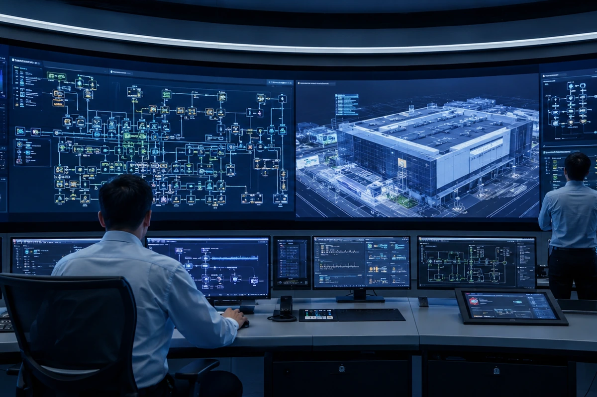

A · 私たちについて
ターンキーコンサルタント、
単一の窓口で工場全体を担う。
先端ウェーハ工場は、高度に結合した数十のシステムの集合体です。構造の微振動は露光装置に影響し、気流設計は歩留まりを左右し、 OHT のレールネットワークは生産のタクトを決めます。TeraFab はターンキーコンサルティング（Turnkey Consulting）の手法で、 オーナー様に代わってすべての専門分野とインターフェースを統合し、複雑な工場建設の窓口を一つにまとめます。
単一窓口でのターンキー統合
要求定義から竣工引渡しまで、TeraFab が各システムのコンサルタント、設計者と施工業者を統括し、オーナー様の窓口は責任ある一つだけになります。
システム横断のインターフェース管理
建屋構造 × クリーンルーム × 機電設備 × 搬送システムの間にあるインターフェースは、工場建設で最もリスクの高い領域です——そして、私たちが最も得意とする領域です。
ライフサイクル全体のサービス
フィージビリティ評価、マスタープラン、設計統合、発注・調達、施工管理から試運転・検収まで、さらに稼働後のファシリティ支援まで対応します。

B · 事業領域
6つのシステム領域で、工場一括デリバリー。
工場のレベル別に対応するターンキーサービス——各項目をクリックすると、業務範囲、実施方法と主要指標をご覧いただけます。

建屋・土木構造工事
敷地マスタープラン、微振動対応の構造設計、ワッフルスラブと鉄骨工事——先端プロセスにミリ単位の基礎を築きます。
詳しく見る
クリーンルーム計画・施工
ISO Class 3–6 の清浄度クラス計画、気流設計とベイ・チェイス配置。間仕切り工事から認証試験まで一貫して対応します。
詳しく見る
超純水・特殊ガス・機電設備
UPW 超純水、特殊ガスと薬液供給、高低圧の受変電・配電、空調・排気システムの計画設計と施工管理。
詳しく見る
OHT ウェーハ搬送システム（AMHS）
AMHS のマスタープラン、レールネットワークと搬送シミュレーション、MCS 統合とベンダー選定——すべての FOUP を定時に届けます。
詳しく見る
排水処理・再利用／特殊ガス回収
排水の系統分離処理、RO／UF による再生水利用と PFCs 削減、特殊ガス回収工事——法規制と持続可能性の目標を両立します。
詳しく見る
ファシリティシステム統合
FMCS／SCADA 監視、エネルギー管理、ガス検知とデジタルツイン——工場全体のシステムを、一枚の画面で把握します。
詳しく見るC · 業務プロセス
ターンキー6段階、最初の一枚の図面から引渡しまで。
フィージビリティ評価
立地条件、生産能力要件、法規制と投資フレームの分析。
マスタープラン
敷地マスタープラン、システム容量計画と増設の青写真。
設計統合
基本／詳細設計、システム横断のインターフェース統合と BIM 協働。
発注・調達
仕様書の作成、ベンダー選定と契約・調達管理。
施工管理
工程、品質、安全とインターフェース調整の全期間監理。
試運転・検収・引渡し
システム試運転調整（T&C）、認証検収と文書引渡し。

D · お問い合わせ
工場建設プロジェクトを始めましょう。
新規ウェーハ工場の建設、既存工場の増設、単一システムの計画相談まで、まずはお気軽にご相談ください。